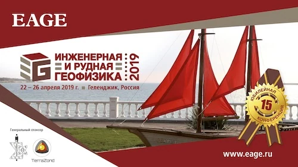
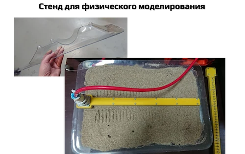

Фотографии с выставок и демонстраций



Архив мероприятий и видео
Часть фотоальбомов из архива недоступна.
Инженерная геофизика-2017 (EAGE)
(Кисловодск, 23 апреля 2017)
Презентация аппаратуры “Геовизер”
(Новосибирск, 29 апреля 2014)
Инженерная геофизика-2014 (EAGE)
(Геленджик, 21-25 апреля 2014)
Выставка «Русские приоритеты»
(Москва, 3-6 марта 2012 г.)
Европейский салон изобретений «Конкурс Лепин»
(Франция, г. Страсбург, 2 – 12 сентября 2011 г.)
Применение аппаратуры АЭМП-14 и Скала-48
(Новосибирск, 12 апреля 2011)